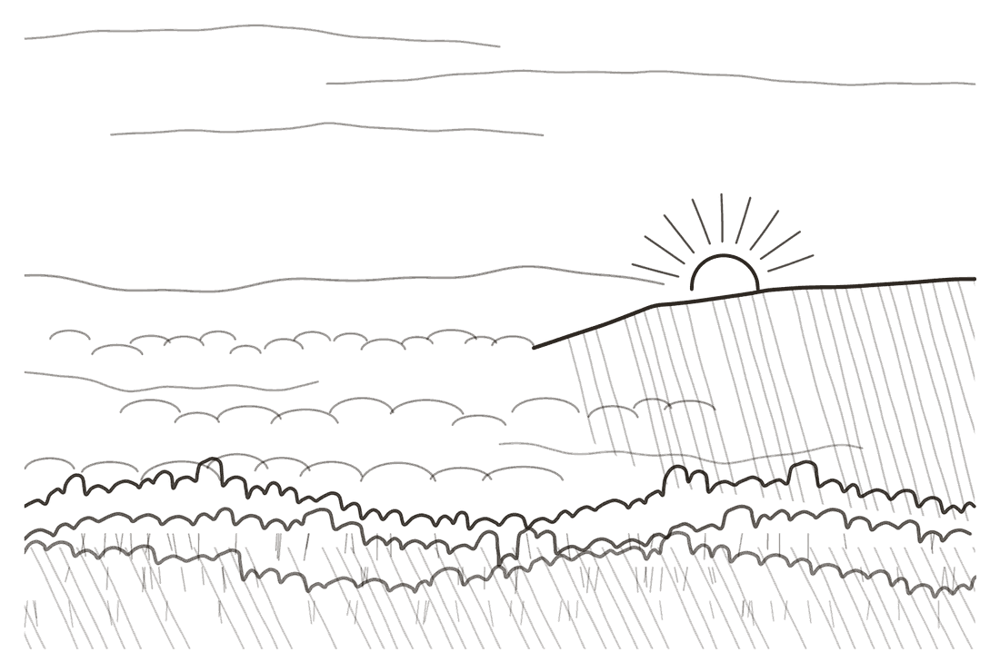
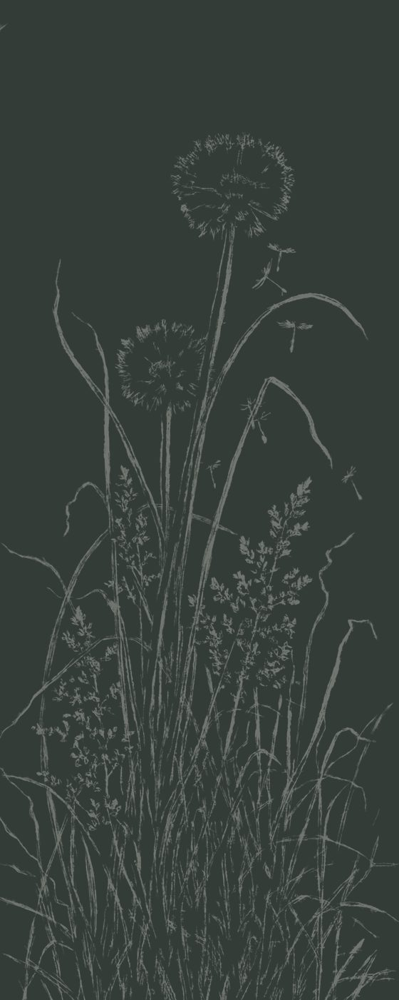
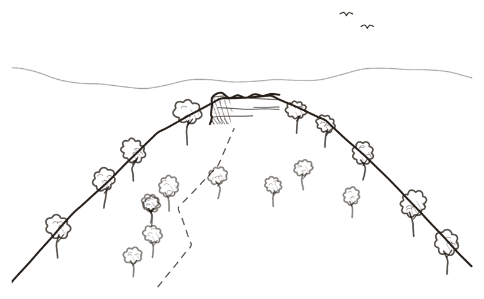
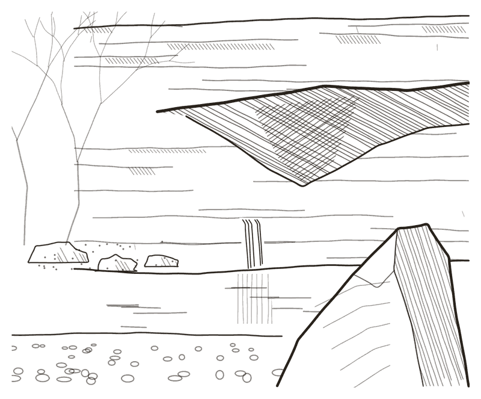
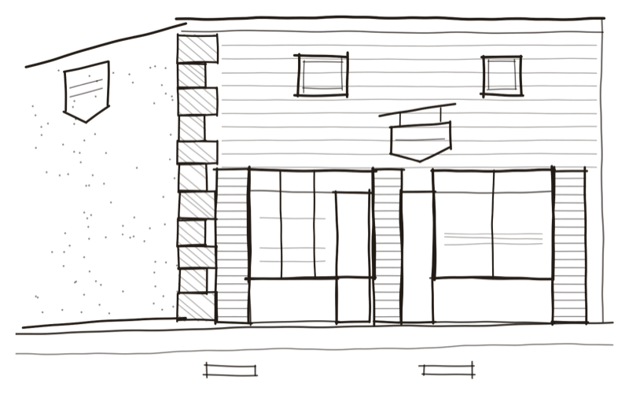
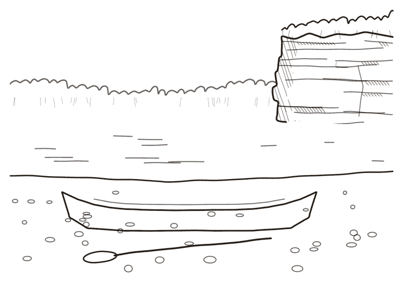
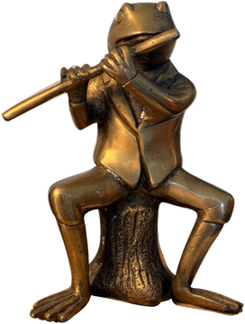

Everything else runs on a schedule —
The canyon
never rushes.
A proper house for six, above the Arkansas Grand Canyon in Jasper.
Check datesA day
on the ridge
Coffee from the Moccamaster, with a view clear across the canyon. Some mornings the canyon below fills with fog, and you can sit and watch it lift.
By noon you can be on a trail or a gravel bar on the Buffalo. Come back up the mountain for the hot tub, then supper on the deck, or pizza on the square in Jasper. The canyon turns orange in the last hour of light. After dark, it's the fire pit and a record on the player.



Good for
staying in
- Room for six
- Two king bedrooms and a bunk room (twin over double). Room for a family, two couples, or just the two of you.
- The beds
- Hotel-grade linens, blackout curtains in every bedroom, and Apotheke in the bath.
- The design
- Made for this place, from the colors of the Ozarks and the Buffalo River country to the old landscapes on the walls.
- After the trail
- Games and a record nook inside. A hot tub and a fire pit for s'mores out back.
- Supper
- A kitchen set up for real meals, and a table on the deck for eating outside.
Down the mountain,
the Buffalo.
The Buffalo was the country's first National River, and it runs just below the ridge.
Our favorite hikes




More within an hour
- Big Creek Cave Falls15 min
- Mill Creek Loop25 min
- Pedestal Rocks & Kings Bluff30 min
- Whitaker Point (Hawksbill Crag)55 min
Drive times from the house.
In town

- Low Gap Cafe
- Ozark Cafe
- Jasper Pizza Company
- Bubba's Buffalo River Store
- Harps, for groceries
Frequent
questions

- How close is the river?
- Close. The nearest float, Ozark to Pruitt, starts just down Highway 7. It's two miles of long pools and small riffles, and it's a good first float for kids. Outfitters in Ponca and Jasper rent boats and run shuttles. If you're looking for a wading spot, we love the Little Buffalo River access by Bradley Park (15 minutes), Mill Creek Trail (25 minutes), and Kyle's Landing (35 minutes). More on the river
- Who is the house good for?
- We made it for families like ours, so there's a bunk room upstairs, toys for imaginative play, a pack and play, and a high chair. The Field Box by the door has our favorite kid-friendly hikes. It works just as well for two couples splitting the king rooms, or a quiet weekend for two with the hot tub and the record player to yourselves.
- Where do we get groceries and a bite to eat?
- Dollar General is four minutes down the road for the basics, and Harps in Jasper, about 16 minutes away, has everything else. For a meal out, we love Low Gap Cafe, Ozark Cafe, and Jasper Pizza Company, and Bubba's Buffalo River Store is the place for a river T-shirt.
- When are check-in and check-out?
- Check-in is at 4:00 and check-out is at 11:00. If you need a little more time on either end, message us before you arrive and we'll see what we can do.
- What if our plans change?
- Cancel at least 14 days before arrival for a full refund. After that, the stay can't be refunded.
- When can we book?
- We're opening a few dates at a time this winter. Follow along on Instagram, and we'll post them there first.


You'll want to
stay a while.
The calendar opens here soon. We're opening a few dates at a time this winter, and we'll post them on Instagram first.
Follow along